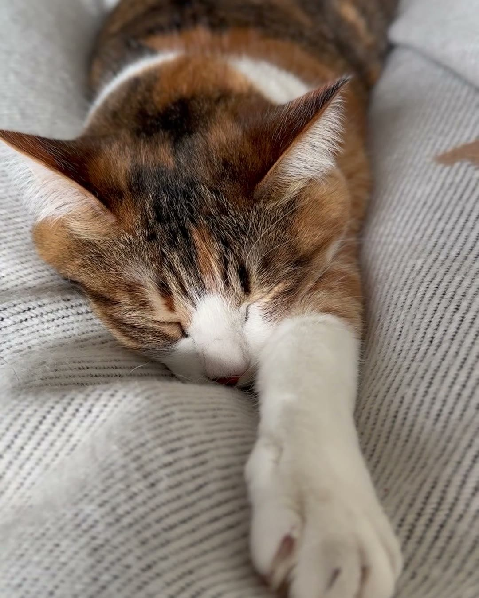
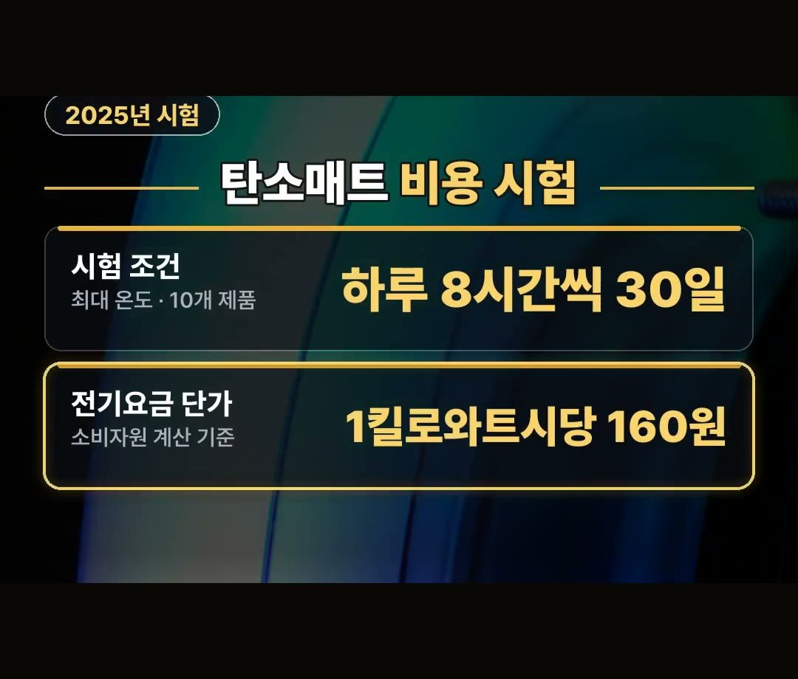
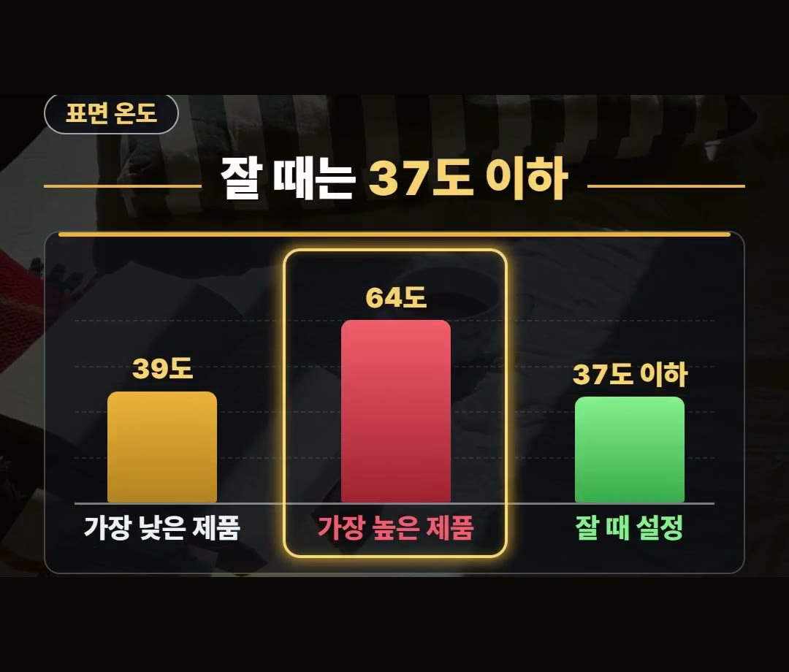
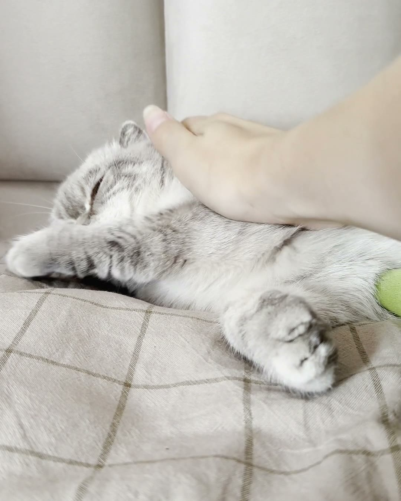
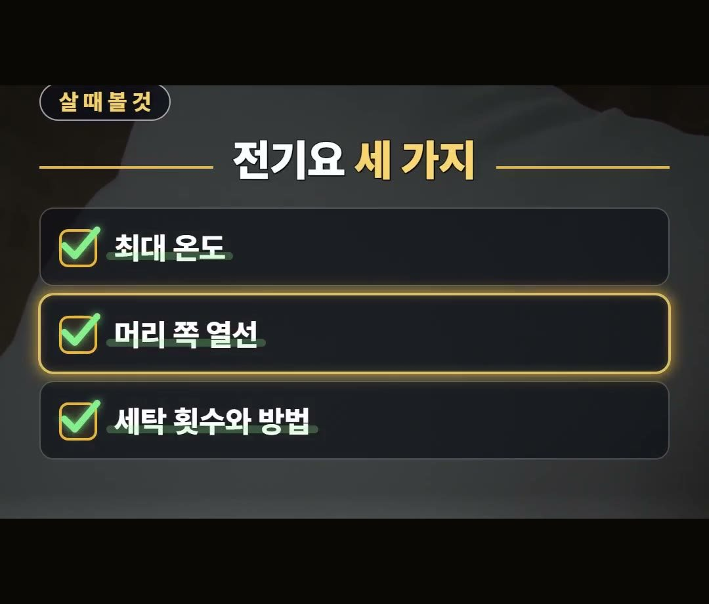

전기요 전기세, 켜 두는 시간과 잘 때 37도 이하로 두는 까닭 정리
※ 이 글에는 제휴 링크가 포함되어 있으며, 링크를 통해 구매하시면 일정 수수료를 받을 수 있습니다. (가격은 같습니다)
※ 이 포스팅은 선물하기 큐레이터 활동의 일환으로, 주문 발생 시 일정액의 수수료를 제공 받습니다.
※ 이 포스팅은 쿠팡 파트너스 활동의 일환으로, 이에 따른 일정액의 수수료를 제공받습니다.
※ 이 콘텐츠는 토스쇼핑 쉐어링크 활동의 일환으로, 링크를 통한 구매가 발생하면 일정 수수료를 지급받습니다.
결론부터 말씀드리면, 전기요는 온도 단계와 켜 두는 시간을 어떻게 쓰느냐가 전기세와 잠자리 안전을 같이 좌우합니다.
그리고 잘 때는 매트 표면 온도를 37도 이하로 두는 것이 2025년 한국소비자원 탄소매트 시험에서 나온 안내예요.
왜 그런지는 아래에서 차례로 풀어 볼게요.
2025년 소비자원 탄소매트 10개 시험에서 최대 온도의 매트 표면은 39도에서 64도까지 갈렸어요.
그래도 잘 때는 저온화상을 막으려고 37도 이하로 두라고 했으니, 이 숫자 하나는 꼭 기억하세요! 🛏️

전기요 전기세가 갈리는 곳
전기요는 이불 밑에서 몸 닿는 곳만 데우는 물건입니다.
방 전체를 데우는 것이 아니라 잠자리만 데우니, 결국 몇 단계로 켜는지와 얼마나 오래 켜 두는지가 전기세를 좌우해요.
같은 전기요라도 높은 단계로 오래 켜 두느냐, 미리 켜 두었다가 잘 때 낮추느냐에 따라 쓰는 방식이 달라집니다.
이 글은 그 쓰는 방식을 소비자원 시험 숫자로 짚어 보는 글이에요.

2025년 소비자원 탄소매트 비용 시험 조건
한국소비자원은 2025년에 탄소매트 10개 제품을 시험했습니다.
한 달 비용은 이런 조건으로 견줬어요.
- 온도: 최대 온도
- 시간: 하루 8시간씩 30일
- 전기요금 단가: 1킬로와트시당 160원
같은 조건으로 쟀는데도 비용은 제품마다 달랐습니다.
다만 이 시험은 탄소매트를 대상으로 한 것이라, 모든 전기요에 같은 숫자가 나온다고 넓혀 말할 수는 없어요.
조건과 시험 대상을 같이 기억해 두시면 됩니다.

최대 온도 39도에서 64도까지, 잘 때는 37도 이하
같은 2025년 시험에서 최대 온도로 둔 매트 표면 온도는 제품마다 크게 달랐습니다.
- 최대 온도의 매트 표면: 39도에서 64도까지 (제품마다 차이)
- 잘 때 설정: 37도 이하 (저온화상 방지)
최대 온도가 높은 제품이라도 잠을 잘 때는 낮춰서 써야 한다는 뜻이에요.
최대 온도로 밤새 켜 두는 쓰는 방식은 피하는 것이 좋습니다.
온도 단계를 고를 때도 '얼마나 뜨거워지나'보다 '잘 때 37도 이하로 맞출 수 있나'를 먼저 떠올려 보세요.
전기세를 아끼는 쓰는 방식과 잠자리 안전이 이 지점에서 함께 맞물립니다.

데워지는 시간 12분에서 49분, 켜 두는 순서
탄소매트가 35도까지 데워지는 데도 제품마다 12분에서 49분이 걸렸습니다.
그래서 켜 두는 순서를 이렇게 정리했어요.
- 1단계: 잠자리에 들기 전 미리 켜 두기
- 2단계: 잘 때는 온도 낮추기
미리 켜 두면 눕는 순간 따뜻하고, 잘 때 낮추면 37도 이하 안내도 지킬 수 있어요.

전기요 추천 전에 볼 세 가지
전기요 1인용이든 전기요 2인용이든, 고를 때 볼 점을 세 가지로 정리했습니다.
- 최대 온도: 제품마다 39도에서 64도까지 달랐어요
- 머리 쪽 열선: 10개 중 4개는 머리 쪽에 열선이 없었어요
- 세탁 횟수와 방법: 빨 수 있는지만이 아니라 횟수와 방법까지
머리 쪽에 열선이 없는 제품도 있으니 베개를 어느 쪽에 둘지 미리 살펴보는 것이 좋아요.
세탁도 횟수와 방법을 같이 보셔야 합니다.
참고로 상품 설명에 따르면 2인용 더블 크기의 탄소 전기요도 있다고 합니다.

정리
- 2025년 소비자원은 탄소매트 10개를 최대 온도로 하루 8시간씩 30일, 1킬로와트시당 160원으로 견줬고 비용은 제품마다 달랐어요.
- 최대 온도의 매트 표면은 39도에서 64도까지 갈렸지만, 잘 때는 저온화상을 막으려고 37도 이하로 두세요.
- 미리 켜 두고 잘 땐 낮추고, 살 때는 최대 온도·머리 쪽 열선·세탁 횟수와 방법을 보세요.
링크는 아래에 모아 두었어요.
📌 2026년 10월 기준 정보예요. 가격은 시기에 따라 달라질 수 있어요.
· 한국소비자원 비교공감 제2025-22호 탄소전기매트
사진·영상사진·영상: Pexels (Alexander Mass, Cá Bảo, KATRIN BOLOVTSOVA, Monstera Production, Rin Gakusho, Ron Lach)